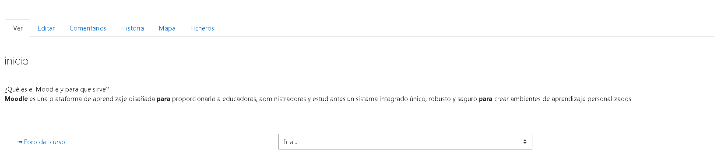

Página de ejemplo
página de ejemplo wiki.¿Qué es un Wiki en Moodle?
Una wiki es una colección de documentos web colaborativamente autorizados. Básicamente, una página wiki es una página web que cualquier usuario del curso puede crear, mediante el navegador y sin necesidad de conocer lenguaje HTML. ... En Moodle, las wikis pueden ser una poderosa herramienta para el trabajo colaborativo.
En Moodle, los wikis pueden ser una herramienta valiosa para el trabajo colaborativo. La clase entera puede editar junta un documento, creando un producto de la clase, o cada estudiante puede tener su propio wiki y trabajar en él con Usted (el maestro) y sus compañeros.

-
La pestaña para Ver en la parte superior, o el enlace del bloque de navegación, le permite a los usuarios mostrar y ver la página wiki.
-
La pestaña para Editar en la parte superior, o el enlace del bloque de navegación, le permite a los usuarios editar la página wiki.
-
La pestaña para Comentarios en la parte superior, o el enlace del bloque de navegación, le permite a los usuarios ver y añadir comentarios acerca del wiki -cuando los comentarios están habilitados en el sitio.
-
La pestaña para Historia en la parte superior, o el enlace del bloque de navegación, le permite a los usuarios ver lo que haya sido cambiado en el wiki. Compare las ediciones al hacer click en el botón para "Comparar Seleccionados". Haga click en el botón para "Restaurar" de la versión que Usted quiere restaurar si la última edición es inapropiada
-
La pestaña de Mapa en la parte superior, o el enlace del bloque de navegación, le permite a los usuarios ver áreas del wiki tales como la lista de páginas (como se observa en la imagen de pantalla siguiente), páginas subidas y páginas huérfanas, etc. (Las páginas huérfanas son las que no están enlazadas a ninguna parte.)
-
La pestaña de Fichero en la parte superior, o el enlace del bloque de navegación, le permite a los usuarios acceder a cualquier archivo(s) que hubieran añadido al wiki. Solamente el rol de profesor puede por defecto añadir y gestionar archivos a la pestaña de ficheros, pero Usted puede permitirle a estudiantes que añadan y las gestionen con una anulación de permiso a la capacidad para Gestionar ficheros de wiki.
Licencia: licencia propietaria intelectual